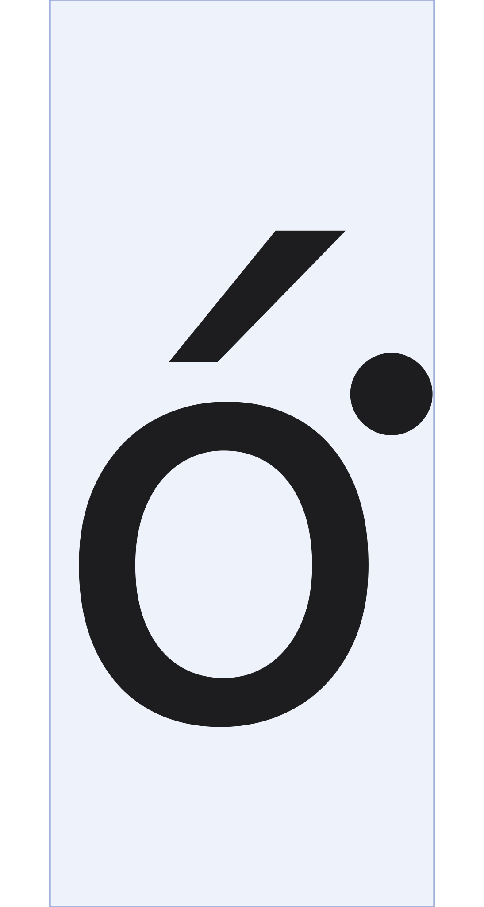
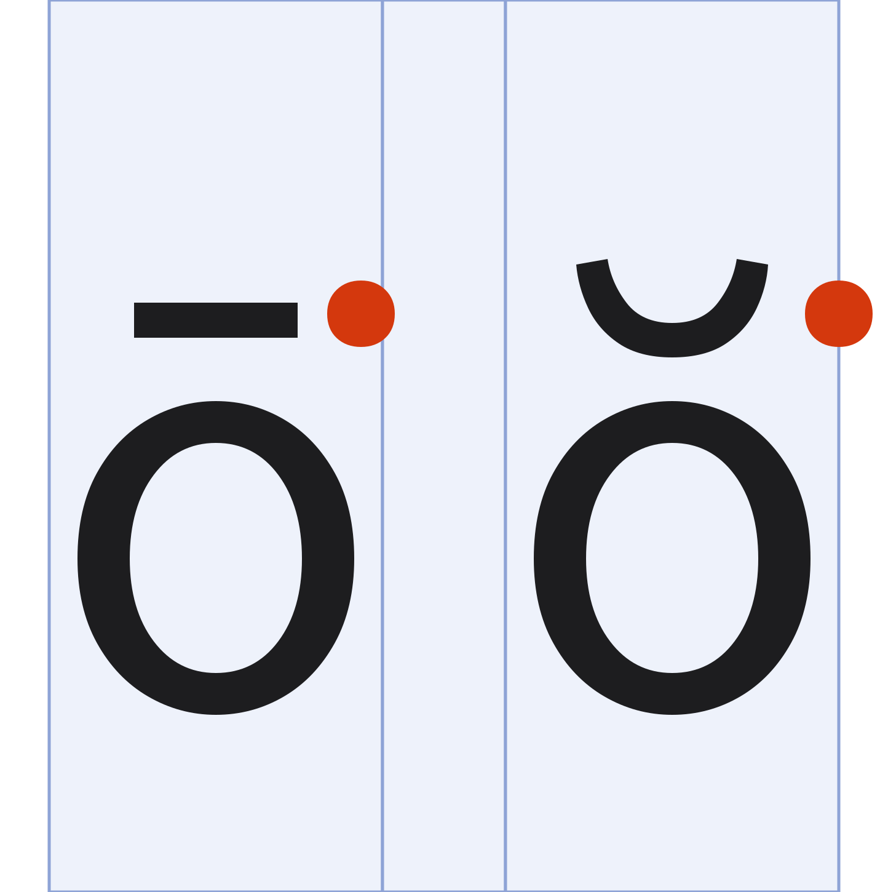

How Fonts Implement POJ
Measuring 24 fonts across 26 test clusters in NFC and NFD revealed four distinct OpenType techniques for placing the o͘ dot and tone marks — plus critical delivery traps on the web.
The four techniques at a glance
In the diagrams below (each showing ó͘), shaded boxes indicate each glyph’s horizontal advance width, and orange marks a separate combining-mark glyph positioned by the font:

A. GPOS anchors
Base glyph carries a topright snap point; mark attaches U+0358 magnetically.
POJ Chhiu-ki, Source Sans 3

B. ccmp ligatures
Designer draws the whole ó͘ as one glyph; ccmp substitutes the sequence.
Lesson One, Huninn, Iansui, TASA, GenYo

C. Spacing dot
U+0358 is a GDEF class-1 base glyph with its own advance width after o.
SIL Charis, Doulos, Gentium

D. Overstrike / fallback
Fixed outline offset or shaper bounding-box guess; fails on capitals and toned vowels.
Arial, Helvetica, Geneva, Menlo
| Technique | Mechanism | Examples | Pros | Cons |
|---|---|---|---|---|
A. GPOS mark anchors |
o + separate mark glyph(s) placed via mark (top / topright) and mkmk |
Source Sans 3, POJ Chhiu-ki, Arial (for U+030D) |
Small glyph count, scales to variable fonts, works on any anchored base | Requires topright on every precomposed toned vowel (ó ò ô ō ŏ…). Easy to miss: Source Sans 3 omits ŏ Ŏ; I.Ming anchors only o ō. |
B. Precomposed ccmp ligatures |
o 0301 0358 or ó 0358 → single glyph (e.g. o_uni0301_uni0358) |
Lesson One, jf open 粉圓, Iansui, TASA, Tauhu, I.Ming, GenYo, WD-XL | Total artistic control over tone/dot collision; independent of mark positioning bugs | Increases glyph count; must match NFC, NFD, and reverse order; uncovered combos fall back to A; ligatures lose o’s kerning unless added to kerning classes. |
| C. Spacing dot | U+0358 is a GDEF class 1 base with non-zero advance (Gentium 200, Charis 279, Doulos 255 units) |
SIL Charis, Doulos, Gentium | Dot can never collide with following letters (o͘h, o͘ⁿ) | Wider o͘; must remain GDEF class 1 (a class-3 mark would have its advance zeroed); PDF text extraction may insert a space after the dot. |
| D. Zero-width overstrike or fallback | Zero-advance mark drawn at a fixed coordinate, or no mark table so shaper guesses |
Arial (U+0358), Geneva, Helvetica, Menlo, taigivs Latin, Tauhu (uncovered) |
Zero implementation effort | Fits at most one base shape; breaks on capitals, toned vowels, and non-HarfBuzz engines. |
A. GPOS mark anchors
Each base glyph defines invisible attachment coordinates: top for centred tones and topright for U+0358. The shaper snaps each mark’s corresponding _top or _topright anchor onto the base.
Because HarfBuzz normalises text to NFC before GSUB/GPOS, ō͘ arrives as precomposed ō + U+0358. Therefore topright must exist not only on o O, but on every precomposed toned vowel (ó ò ô ō ŏ and capitals). Because HarfBuzz fallback is all-or-nothing, a single omitted anchor drops the dot to offset (0, 0). Source Sans 3 illustrates this exact bug on ŏ͘ and Ŏ͘:
topright anchor so the dot drops to (0, 0)
B. Precomposed glyphs via ccmp
The designer draws o͘ ó͘ ò͘ ô͘ ō͘ ŏ͘ o̍͘ and capitals as finished glyphs, substituting them via ccmp ligature rules. This allows tailored optical adjustments (narrowing wide macrons/circumflexes next to the dot, just like Vietnamese fonts narrow accents on ố/ớ).
Engineering pitfalls to avoid:
- Input forms: Must match NFC (
oacute uni0358), NFD canonical (o uni0301 uni0358), and non-canonical order (o uni0358 uni0301), with 3-glyph rules listed before 2-glyph prefixes. - GDEF class: Every ligature output glyph must be classified as GDEF class 1 (base), not class 2 (ligature), so subsequent marks can still attach cleanly if needed.
- Kerning: Add every precomposed o͘ glyph to the font’s
o/Okerning classes, or pairs like Tō͘ / o͘v lose kerning. - Safety net: Fonts that ship Technique B without GPOS
mark(such as GenYo Min and the Tauhu family) look great on covered clusters, but any unlisted combination depends on engine fallback.
C. Spacing dot (SIL approach)
SIL’s Charis, Doulos, and Gentium treat U+0358 as a GDEF class-1 base glyph with a deliberate positive advance width (200 units in Gentium, 279 in Charis, 255 in Doulos). Because the dot occupies its own slice of horizontal space, it can never collide with ascenders or superscripts in sequences like o͘h, o͘k, o͘l, o͘t, or o͘ⁿ.
Crucially, U+0358 must stay GDEF class 1: classifying it as a GDEF class-3 mark causes OpenType shapers to zero its advance width. Trade-offs are slightly wider o͘ words and occasional spurious spaces when copying text out of PDFs.
D. Zero-width overstrike & shaper fallback
When a font includes U+0358 without anchors:
- If the font has a
marktable for other accents (like Arial), HarfBuzz disables fallback completely and drawsU+0358at offset(0, 0)— wherever its outline happens to live (in Arial, hanging in the space after the letter). - If the font has no
marktable at all (like macOS Geneva, Helvetica, Menlo, and the Latin portion of 字咍 taigivs), HarfBuzz runs bounding-box fallback. On capital Ó͘ and Ō͘, fallback positionsU+0358above the entire ink box (accent included), floating the dot far above the letter.
Best practice: combining A + B
The strongest POJ fonts ship precomposed ccmp glyphs (B) for all common clusters — guaranteeing optical perfection and zero collisions — backed by full GPOS mark / mkmk anchors (A) as a universal safety net for every other base and input form. Lesson One, jf open 粉圓 (Huninn), 芫荽 Iansui, TASA Explorer/Orbiter, and WD-XL Lubrifont all follow A + B.
Optional features & hidden switches (liga, clig, case)
OpenType features are not all enabled unconditionally:
- Never place POJ glyph building in
ligaorclig. Under CSS Text Level 3, Chrome, Safari, and Firefox disable optional ligatures wheneverletter-spacingis non-zero;font-variant-ligatures: nonedisables them too. Microsoft Word leaves ligatures off by default (unless enabled under Font → Advanced), as do many code editors. Always useccmp. caseis off by default in browsers and Word — even CSStext-transform: uppercasedoes not activate it. Capital-form marks therefore require contextual rules insideccmp, not solely incase.- Verified case study — NunitoPOJ: NunitoPOJ puts some ligatures in
ligakeyed in non-canonical order, so those rules never fire in HarfBuzz. Even withligadisabled, however, itsccmpdotless-i rule and GPOS anchors still render o͘ and i̍ cleanly.
Google Fonts web delivery & unicode-range audit
To minimise bandwidth, the Google Fonts CSS API (fonts.googleapis.com/css2) slices each font into separate unicode-range WOFF2 files. We audited what Chrome actually receives (verified 2026-11-20):
| Family on Google Fonts | Total slices | Slice holding U+0358 / U+030D / U+207F | Result on a web page |
|---|---|---|---|
| TASA Explorer | 2 (latin, latin-ext) | None | Marks are not served at all, even though the full GitHub release has them. Every o͘ and 8th tone falls back to a system font. |
| Source Sans 3 | 7 | None | POJ marks are stripped from all served slices. |
| EB Garamond | 7 | None | Stripped — and the source font lacks U+0358 anyway. |
| 芫荽 Iansui | 108 | Slice #104 | Dedicated Taigi slice holding POJ marks, ḿ ǹ ı ᴺ, and base letters. |
| jf open 粉圓 (Huninn) | 111 | Slice #106 | Same dedicated Taigi slice pattern. |
Notice that in Iansui and Huninn, plain o appears in both the latin slice and the Taigi slice; whether o + U+0358 stays inside a single font file depends on each browser’s per-cluster fallback behaviour and should be tested in Chrome, Safari, and Firefox. Note also that 狗公會曉學台語 lists TASA Explorer/Orbiter under 線頂 Google 字體 白話字台文, so websites loading TASA from Google Fonts are directly affected. (Google Docs/Slides delivery was not tested.)
For reliable POJ on the web: self-host the full font (or use the Google Fonts &text= parameter). When subsetting with pyftsubset or build plugins, always preserve:
- Codepoints:
U+0358,U+030D,U+207F,U+1D3A,U+0131,U+0237, ḿ Ḿ ǹ Ǹ, and all toned vowels; - Layout features:
ccmp,mark,mkmk(or--layout-features='*'); - For IVS ruby fonts: preserve the
cmapformat 14 subtable.